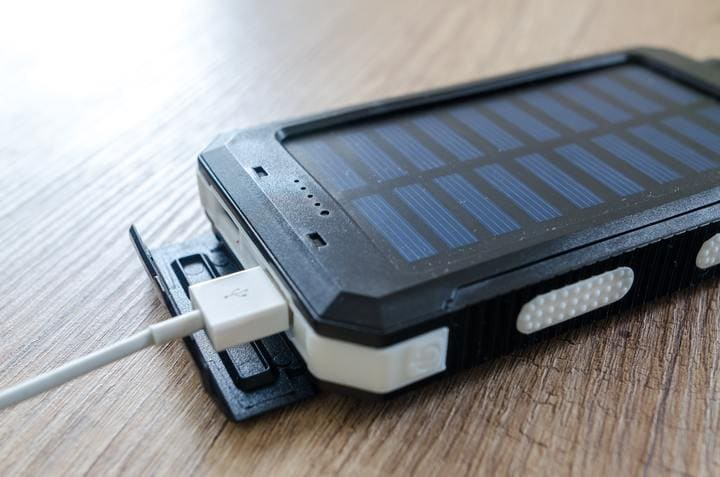
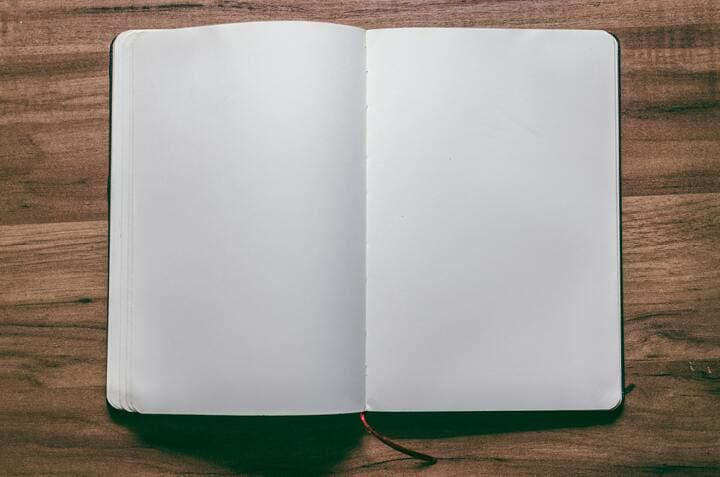
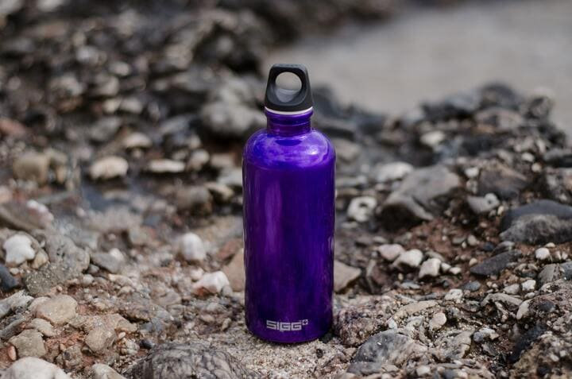
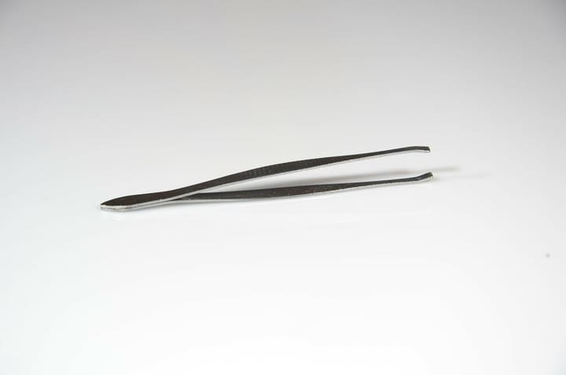
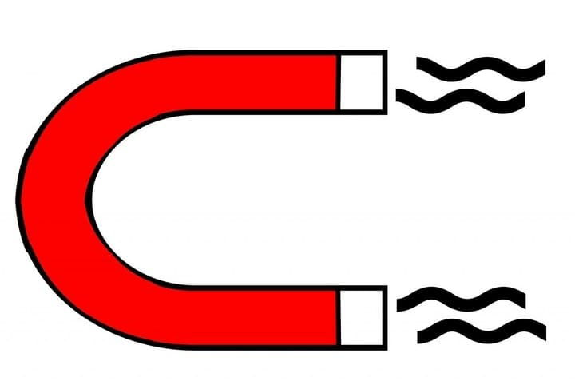
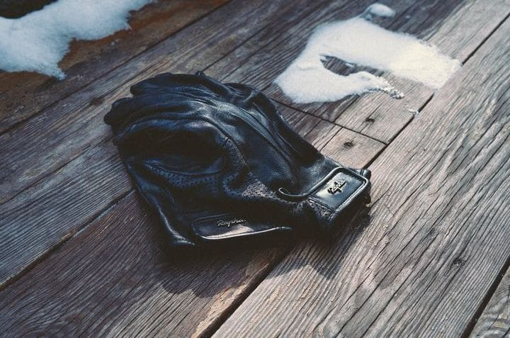
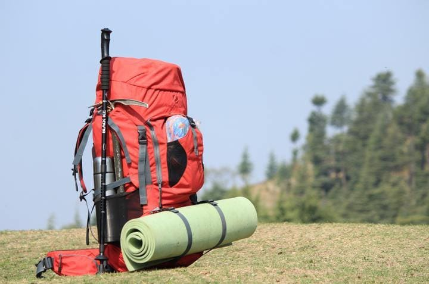

Optioneele benodidheden!

1. Batterijen
Je kunt die caches niet vinden wanneer je GPS-apparaat leeg is! Bekijk enkele accu's met hoge capaciteit om de jacht voort te zetten. Pro tip: Download offline kaarten van de gebieden die u gaat bezoeken om de levensduur van de batterij te verlengen!

2. Pen en een notitieboekje
Een boekje om coördinaten te noteren of de codes van de bonuscache is een must wanneer je op pad bent voor een multicache of een geocachereeks aan het lopen bent.

3. Drinkbus
Gehydrateerd blijven is essentieel als je lange tijd rondloopt, dus een fles water van hoge kwaliteit moet het in je kit maken.
4. Iets om te ruilen
In grotere caches kan je spulletjes vinden om te ruilen, het principe is simpel: neem enkel iets uit de cache wanneer je iets kan terugplaatsen. Neem dus iets kleins mee dat je wil ruilen wanneer je een cache gevonden hebt.
5. GPS
Er zijn veel mobiele apps die u kunt gebruiken om te downloaden en naar geocaches te zoeken, maar ouderwets gaan met een echte GPS-navigator is nog steeds een optie (vooral op plaatsen waar uw telefoon geen signaal heeft!)

6. Pincet
Niks zo onhandig als een smal buisje waarin een logboek gerold zit, met een pincet peuter je dit er makkelijk uit. Soms zitten caches ook vrij diep, waardoor je een pincet zeker en vast kan gebruiken.
7. Spiegeltje
Om onder banken te kijken kan je een spiegeltje met telescopische steel gebruiken, bij multicaches zijn spiegeltjes handig wanneer de tag met het volgende waypoint verstopt zijn aan die kant van een paaltje, wat je oog niet kan zien.

8. Magneet
Een magneet kan je soms ook gebruiken wanneer deze niet aanwezig is bij de cache, zeker in combinatie met een touw of telescopische steel voor caches die iets dieper verstopt zijn.

9. Handschoenen
In netelige situaties of wanneer je op zoek bent in donkere holtes, dan zijn je handen min of meer beschermt met handschoenen. Tuinhandschoenen zijn hiervoor aan te raden.
